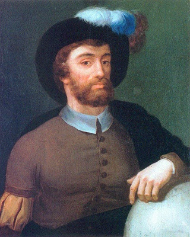
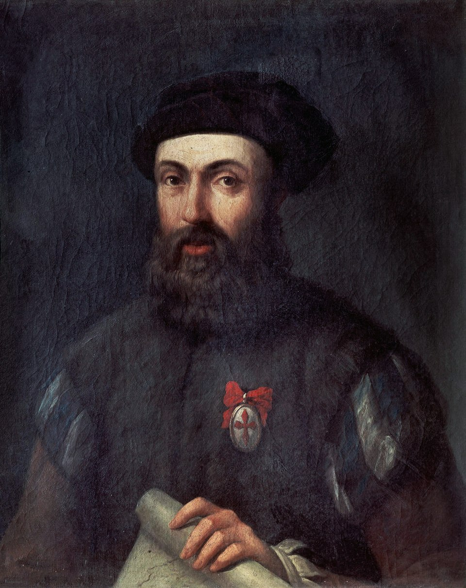

Juan Sebastian Elcano

El más grande marino que la historia dio. Nace en
Guetaria en 1.476, muere en el océano Pacífico en
1.526. Nació en una familia de marinos y
pescadores acomodados, con embarcación propia,
dedicados al comercio. Era el mayor de nueve
hermanos y menos uno que fue sacerdote, llamado
Domingo, todos los demás fueron marinos.
Tuvo una hija en Guetaria siendo joven y otra con
su esposa María de Vidaurreta. Tuvo también un
hijo, Domingo Elcano, con una tal María Hernández,
el cual nombra heredero.
Puso su nave a su disposición de la corona para la
expedición militar contra Argel y posteriormente en
la campaña de Italia al mando del Gran Capitán. Al término de esta campaña, como la
corona no pagó la deuda contraída con él y ante la amenaza de la tripulación, se vio
obligado a pedir un préstamo a unos prestamistas italianos y, como no pudo hacer
frente a la deuda, terminó por perder su nave. Al hacer esto, cometió un grave delito
pues según las leyes de la época estaba prohibido entregar naves a países extranjeros.
Por ese motivo se encontraba en Sevilla en 1.518, tratando de buscar enrolarse en algún
barco que fuese bien a América o a cualquier lugar que lo alejase de los que querían
apresarlo.
Su odisea la cuento en este relato y para tratar de comprender la grandeza de este
hombre, decir que, en vez quedarse en España y disfrutar de la gran renta concedida por
Carlo I y tan merecida, en 1.525 ya está de nuevo embarcado en una nueva expedición
hacia las Molucas. Viaje que a la postre le acarrearía la muerte al poco de cruzar el
estrecho de Magallanes. En esta armada iba como capitán de una gran nave, la Santi
Espirito, y como piloto mayor de la expedición al mando de Fray Jofre de Loaisa, no
murió de escorbuto, como casi todo el mundo asegura, murió de una intoxicación
alimenticia por haber comido una barracuda, pez venenoso, junto con todos los
capitanes.
Fernando de Magallanes
“Voy a tratar de resumir lo sucedido a Magallanes con
su rey.

Había participado en la conquista de Malaka por los
portugueses unos años antes, decía haber estado en las
Molucas, y luchando en África había recibido una
lanzada en una pierna, lo que hizo que quedara cojo de
por vida. Tras estas campañas llega a la corte de Manuel
“El Afortunado” y éste que tenía fama de tacaño a pesar
de ser el monarca más rico de occidente, se negó a
satisfacer las demandas de Magallanes y éste que tenía
un fuerte carácter no dudó en renegar de su rey y pedir
ser aceptado como súbdito del rey Carlos I. Por supuesto que debió traer en su poder
valiosísimas cartas náuticas, derroteros y planisferios que eran de un valor incalculable
en la época, más toda su experiencia como marino en esos lejanos mares”.
El motivo principal por el que Magallanes terminó perdiendo la vida en Mactán fue que,
en las capitulaciones de Valladolid firmadas con Carlos I, éste además del 20 % de los
beneficios de la expedición, tenía derecho a tomar posesión de las dos islas que más le
conviniese y además de la de Cebú, le gustaba Mactán, porque si no es así no se entiende
su decisión de entrar en una guerra que no era la suya y que acabó poniendo en peligro
el éxito de todo lo concertado con el rey.
Gonzalo Gómez de espinosa
Nacido en 1.479 en Espinosa de los Monteros (Burgos). Muere en Sevilla en 1.540.
Es quizás la segunda o tercera persona más importante de la expedición y uno de los
más olvidados. Es nombrado por el rey, alguacil mayor de la armada de Fernando de
Magallanes. No es marino, es soldado y con cinco ayudantes es el encargado de hacer
cumplir la ley durante todo el tiempo que dure la travesía. Su actuación es vital en varias
ocasiones y creo que sin él, todo hubiese fracasado.
La primera acción clave sucede en el puerto de San Julián, donde varios capitanes se
amotinan contra Magallanes. Diciendo portar una carta de Magallanes sube a la Victoria
y degüella a su capitán, Luis de Mendoza. Apresa a Duarte de Mendoza y sofoca la
rebelión con presteza y resolución.
En Brunei también su valentía, matando y cortando la cabeza de un sobrino del sultán y
amenazando a éste con hacerle lo mismo consigue que los dejen libres.
Cuando es nombrado Capitán General, sus decisiones sensatas y coherentes consiguen
que la empresa termine con éxito, no dudando en sacrificarse él quedando allí con parte
de sus hombres y que los de la Victoria partieran.
Tras varios años de trato vil por parte de sus captores consigue la libertad y llegar a
España en 1.527.
Por sus servicios y méritos el rey lo recompensó con una pensión vitalicia, un
escudo
familiar y un buen trabajo como capitán de la Casa de la Contratación.
CRISTOBAL DE HARO
“Una de las personas más importantes que hicieron
posible esta empresa fue el empresario burgalés
Cristóbal de Haro. Financiando buena parte de ella”.
“También apoyó el proyecto por su descontento con el
rey portugués”.

Esteban Gómez
Piloto de la San Antonio. Nació en Oporto en 1.483. Muerto en río Paraguay en 1.538.
Su decisión de abandonar la expedición y volver a España puso en grave peligro todo el
proyecto, pues en la San Antonio se encontraban la mayoría de los víveres y
bastimentos, pues era la nao más grande de todas.
Fue creído por Carlos I y de hecho en 1.524 lideró una nueva expedición para buscar un
paso por el norte de América, No lo encontró como es lógico, pero sí cartografió y
descubrió buena parte de los territorios del norte de Estados Unidos y Canadá.
Alvaro de saavedra
Familiar de Hernán Cortes, capitaneó una escuadra compuesta por tres naves que
mandó Cortés para que ayudase a los españoles que quedaron en las “Isalas de las
Especias”. Consiguió llegar y cumplir parte de lo ordenado aunque tampoco pudo
regresar a Nueva España. Esto no se conseguiría hasta 1.565 cuando Andrés de Urdaneta
descubrió el tornaviaje.